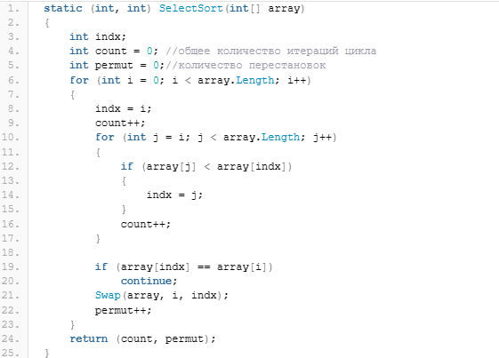
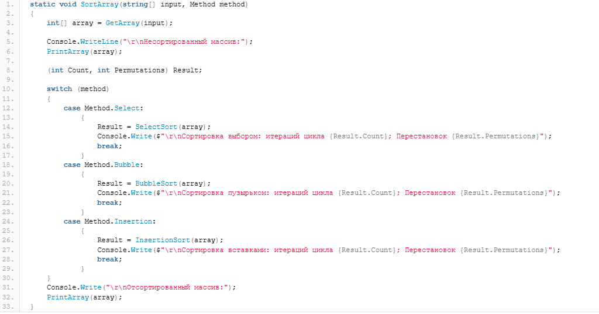

Содержание
Для того, чтобы определить кортеж в C# можно использовать следующее описание:
(типы_элементов_через_запятую) Имя_кортежа;
То есть, вначале в круглых скобках указываем через запятую типы данных для элементов кортежа, а затем — имя кортежа. Например:
(int, double, string) tuple;
Чтобы инициализировать кортеж, мы также должны использовать круглые скобки:
tuple = (1, 1.2, "Hello world");
Так, выше мы объявили кортеж с именем tuple и инициализировали его, присвоив каждому элементу соответствующее значение. Теперь мы можем обратиться к элементам кортежа следующим образом:
int i = tuple.Item1;
Console.WriteLine(i);
Здесь мы присвоили переменной значение первого элемента кортежа. Можно и напрямую вывести любой элемент кортежа в консоль, например, так:
Console.WriteLine(tuple.Item3);
Item1, Item2, Item3 и так далее — это имена полей кортежа, которые создаются автоматически. Чтобы добраться до любого элемента кортежа, достаточно написать его имя, поставить точку и в выпадающем списке выбрать необходимых элемент. Но, согласитесь, что Item1 и так далее — не совсем удобные имена? Что скрывается за tuple.Item1 — знает только сам разработчик и то, может через день забыть. Поэтому, при определении кортежа мы можем сами указывать имена полей, например:
(int Count, double Summ, string Hello) tuple;
tuple = (1, 1.2, "Hello world");
int i = tuple.Count;
Console.WriteLine(i);
Console.WriteLine(tuple.Hello);
В приведенном выше примере мы объявили кортеж с тремя элементами и каждому элементу определили свое собственное имя. Теперь мы можем использовать понятные имена элементов кортежа.
Одним из наиболее распространенных способов использования кортежей является получение нескольких значений при вызове метода. Когда мы рассматривали методы C#, то для получения нескольких значений из своего метода мы придерживались такого правила — одно значение возвращается в результате метода (через оператор return), а все последующие — через параметры с модификатором out. Такой подход вполне может быть. А можно использовать для возврата необходимых значений кортеж. Чтобы продемонстрировать использование кортежа, напишем пример сортировки массива различными методами, например, возьмем сортировку выбором, пузырьковую и вставками. Пусть наша программа будет оценивать работу каждого алгоритма по следующим параметрам: количество сравнений и количество итераций в циклах.
Теперь мы уже знаем как использовать собственные методы в C# и даже немного улучшили нашу первую программу сортировки массива, написав вспомогательный метод для вывода массива в консоль. Теперь, используя кортежи, мы ещё немного улучшим наше приложение и «научим» его сортировать массив различными способами и выводить основные результаты сортировки в виде кортежа. Во-первых, так как мы будем сортировать массив различными способами, то нам потребуется вот такое перечисление (enum):
enum Method
{
Select,
Bubble,
Insertion
}
определяющее метод сортировки: выбором, пузырьком и вставками. Теперь, напишем методы, в которых будет сортироваться массив. Я приведу только один из методов — сортировку выбором, как выглядят другие методы — можно посмотреть по приведенным выше ссылкам:

Здесь Swap — это вспомогательный метод, меняющим местами два элемента массива:
static void Swap(int[] array, int i, int j)
{
int temp = array[i];
array[i] = array[j];
array[j] = temp;
}
Обратите внимание на результат, возвращаемый методом SelectSort — это кортеж состоящий из двух элементов с целочисленным типом int. Внутри метода объявлены две переменные — count и permut, которые по мере работы цикла наращиваются и, в итоге передаются через оператор return в виде кортежа:
return (count, permut);
Аналогичным образом написано ещё два метода: BubbleSort для сортировки пузырьком и InsertionSort — для сортировки вставками. Все три метода возвращают кортеж.
Чтобы не загружать основной метод программы лишними инструкциями, напишем один метод, который будет сортировать массив:

Сегодня мы познакомились с таким типом данных как кортежи C#. Используя кортежи можно обеспечивать возврат методом нескольких значений без использования параметров с модификатором out, а также представлять данные различных типов в виде упрощенных структур.